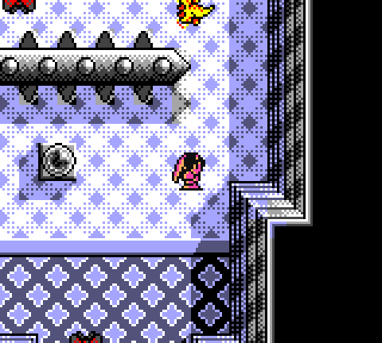
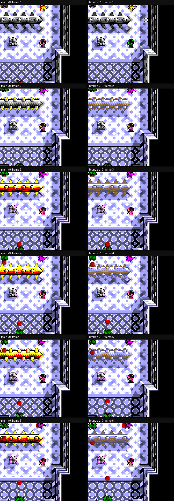
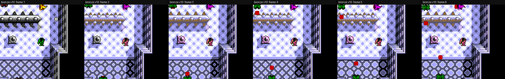
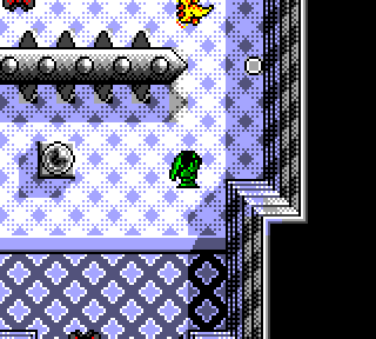
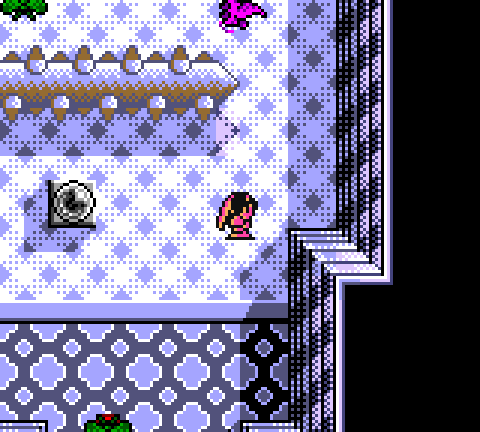
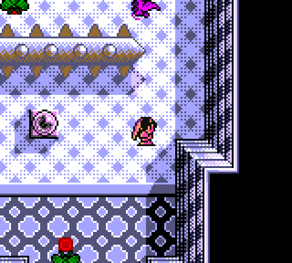
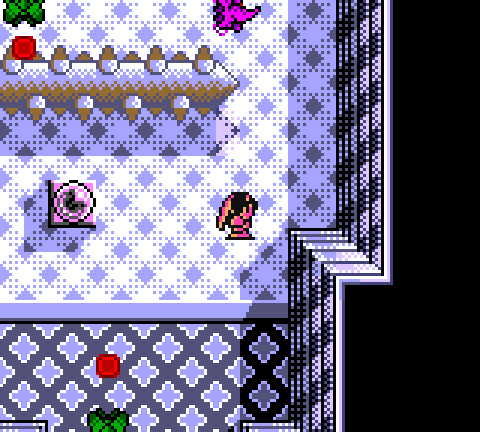
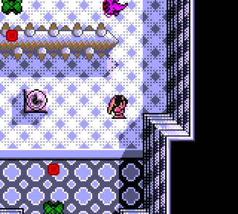
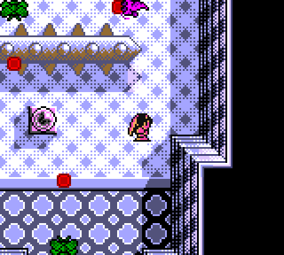
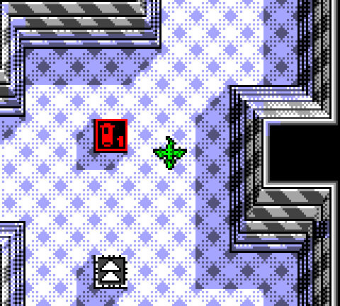

Tested
Stage 1 rotating spike — weathered bronze
Official v10 stream candidate. The cylinder body, rings, wall connectors, and terminal caps now sit on Stage-1-only BG palette 7 with a weathered-bronze row. Support stays on BG6. Pickups stay on BG5. BG7 is restored outside Stage 1. Attract-demo timing is unchanged from main.
Palette row (BG7, Stage 1 only): 7FFF 7E94 19B2 3D4A — white, floor blue, weathered bronze #946b31, floor shadow.
- Parent (current main / v9):
01f8e0b22719a438c9c28f16c09c5bde8ae06f3f8561ffe0c88c08ba02b39d20 - JP v10:
db348784914e4470db2878724c41073cd0fe564602e6788598706a3315fdd8af - EN v10:
d93f34a5d6c7581dbabd0248698940db6e440b82eedc2e0846d2dfe8ce74720b
Headless captures. Individual frames are 3× nearest-neighbor; the before/after sheet and rotation strip are native composites. Official stream suite: 100/100, two byte-identical builds.










Notes: the four-color row keeps floor-blue and floor-shadow for blending, so the cylinder highlight is white rather than a second bronze shade. The orb in the spike room is a pal-2 pickup, not a pal-5 power item. Factory receipts stay on palette 5 so the r534 chain remains byte-identical. A livestream YAML tweak stays in the editor until a later source-chain stage bakes it.